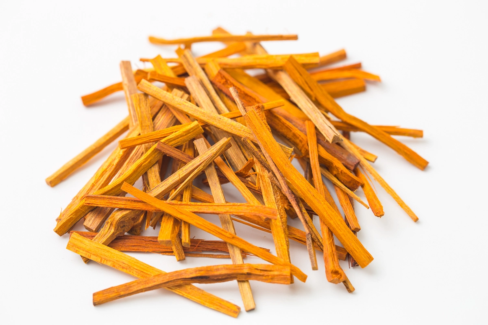
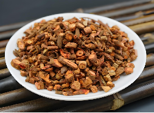

藏于江南丝绸文化博物馆
藏于江南丝绸文化博物馆

红地织金菊花牡丹锦妆花缎
藏于江南丝绸文化博物馆
藏于江南丝绸文化博物馆
绛红独幅大凤莲妆花缎
藏于江南丝绸文化博物馆
藏于江南丝绸文化博物馆
| 名称 | 别名 | 类型 | 主要化学成分 |
|---|---|---|---|
| 红花 | 红蓝花、刺红花、叫红花、草红花、川红花 | 菊科，一年生草本植物 | 黄酮类衍生物红色素（C12H22O11) |
| 苏木 | 苏方木、苏枋、赤木 | 豆科常绿小乔木 | |
| 茜草 | 茹蘆、茅蒐、地血 | 茜草科多年生攀援草本植物 |
红花
红花（学名：Carthamus tinctorius），是一种菊科草本植物，其花朵既是重要的染料来源，也是常见的中药材。红花花瓣含有红色和黄色色素，通过不同的提取方法，可用于染制布料和丝绸，呈现鲜艳的红色或橙黄色，是中国传统植物染料的重要原料之一。在中医学中，红花具有活血化瘀、通经止痛的功效，广泛用于调节血液循环和缓解痛症。
苏木
苏木（学名：Caesalpinia sappan），是一种豆科植物，其心材是天然的红色染料来源，能够提取出色泽鲜艳的红色或红棕色素，广泛用于染制丝绸、棉布等传统织物。在中医学中，苏木具有活血祛瘀、消肿止痛的功效，常用于治疗跌打损伤、瘀血肿痛等症状。


茜草
茜草（学名：Rubia cordifolia），是一种茜草科多年生草本植物，其根部富含茜素，是传统天然红色染料的重要来源，用于染制丝绸、棉布等织物，呈现深红或砖红色。在中医学中，茜草具有凉血止血、活血通经的功效，常用于治疗月经不调、瘀血肿痛等症。